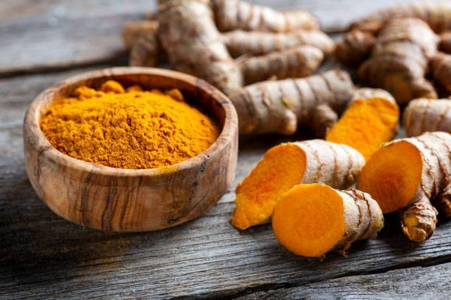

HerbalDrink Herbal Drink
Produk jamu jahe dan kunyit asam layak dibuat karena memiliki banyak manfaat kesehatan yang sudah dikenal sejak lama. Selain manfaat kesehatan, bahan baku jamu ini mudah didapat di Indonesia dengan harga yang relatif terjangkau. Hal ini membuat proses produksi menjadi lebih efisien dan berpotensi memberikan keuntungan secara ekonomi. Produk jamu juga memiliki peluang pasar yang luas, karena semakin banyak masyarakat yang beralih ke minuman herbal alami dibandingkan minuman instan yang mengandung bahan kimia.
Visi Kami
"Menjadi produk minuman herbal tradisional yang sehat, berkualitas, dan inovatif, serta mampu bersaing di pasar modern dengan tetap melestarikan budaya jamu Indonesia."
Misi HerbalDrink
Menyediakan jamu jahe dan kunyit asam yang dibuat dari bahan alami berkualitas tanpa bahan pengawet berbahaya, dan mengembangkan inovasi produk dan kemasan yang menarik agar dapat diterima oleh semua kalangan, terutama generasi muda.
Quality Ingredients
Kami hanya menggunakan bahan-bahan alami terbaik yang dipetik langsung dari sumbernya untuk menjaga integritas nutrisi.
Production Quality
Standar produksi yang higienis dan terkontrol memastikan setiap botol HerbalDrink aman dan berkhasiat tinggi.
Health Education
Kami berkomitmen mengedukasi masyarakat tentang pentingnya gaya hidup sehat melalui keajaiban herbal alami.
Berasal dari
Kekuatan Alam

Kunyit (Curcuma longa)
Kingdom: Plantae
Divisi: Magnoliophyta
Kelas: Liliopsida
Ordo: Zingiberales
Famili: Zingiberaceae
Genus: Curcuma
Spesies: Curcuma longa

Jahe (Zingiber officinale)
Kingdom: Plantae
Divisi: Magnoliophyta
Kelas: Liliopsida
Ordo: Zingiberales
Famili: Zingiberaceae
Genus: Zingiber
Spesies: Zingiber officinale